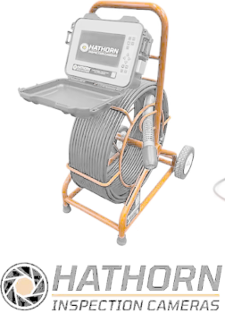
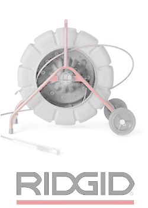
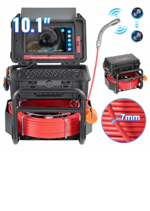
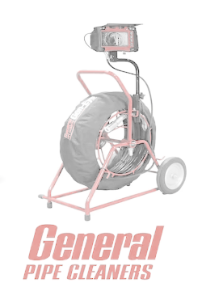
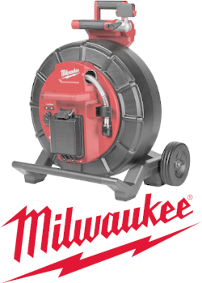
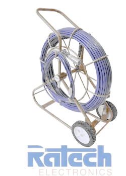

Hathorn
Réparateur accrédité officiel. Nous réparons toute la gamme Hathorn : têtes de caméra, câbles coaxiaux, enrouleurs, connecteurs et systèmes d'enregistrement.
✅ Réparateur accrédité

Techniciens certifiés par les fabricants — réparation avec pièces d'origine pour toutes les grandes marques du marché.
Nous sommes accrédités et certifiés par ces fabricants pour effectuer des réparations avec garantie officielle.

Réparateur accrédité officiel. Nous réparons toute la gamme Hathorn : têtes de caméra, câbles coaxiaux, enrouleurs, connecteurs et systèmes d'enregistrement.

Réparation complète des systèmes SeeSnake : caméras, câbles, enrouleurs CS, moniteurs, connecteurs et accessoires. Pièces RIDGID authentiques.

Réparation de toute la ligne Gen-Eye de General Pipe Cleaners : Gen-Eye Micro, Gen-Eye Plus, Gen-Eye POD, câbles, têtes de caméra et moniteurs.

Réparation de l'ensemble des équipements General Pipe Cleaners : caméras d'inspection, enrouleurs, systèmes d'enregistrement et accessoires.

Réparation des caméras d'inspection Milwaukee M18 : têtes de caméra, câbles flexibles, enrouleurs et moniteurs. Compatible avec l'écosystème M18.

Réparation des équipements Rathtech : caméras d'inspection, localisateurs de radiodétection, câbles et systèmes d'enregistrement. Service complet.
Nous réparons également les équipements de ces fabricants spécialisés.
Réparation des systèmes Pearpoint P350, P400 et gammes professionnelles. Expertise en caméras push et robotisées pour inspection de canalisations.
Centre de réparation certifié pour les systèmes ARIES. Nous sommes l'un des rares centres au Québec autorisés pour ces robots d'inspection avancés.
Réparation certifiée des systèmes Envirosight ROVVER X, ROVVER 45 et QUICKVIEW. Spécialistes en électronique embarquée et systèmes Pan-Tilt-Zoom.
Vous ne voyez pas votre marque ? Contactez-nous — nous réparons la plupart des équipements d'inspection de drain, même les marques rares ou discontinuées.
Nous contacter pour votre équipement →Délais rapides, pièces d'origine. Partout au Québec.